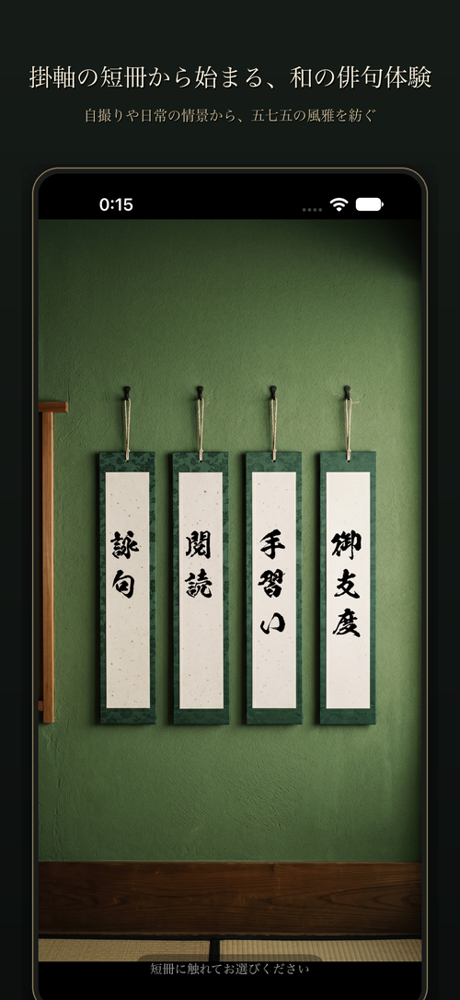
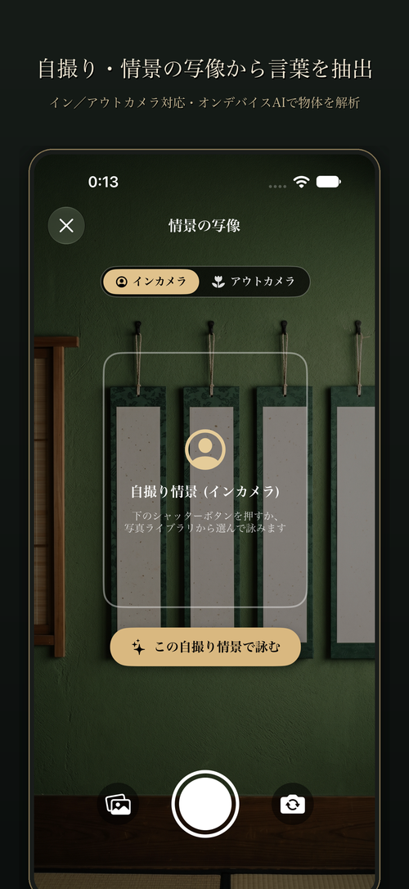
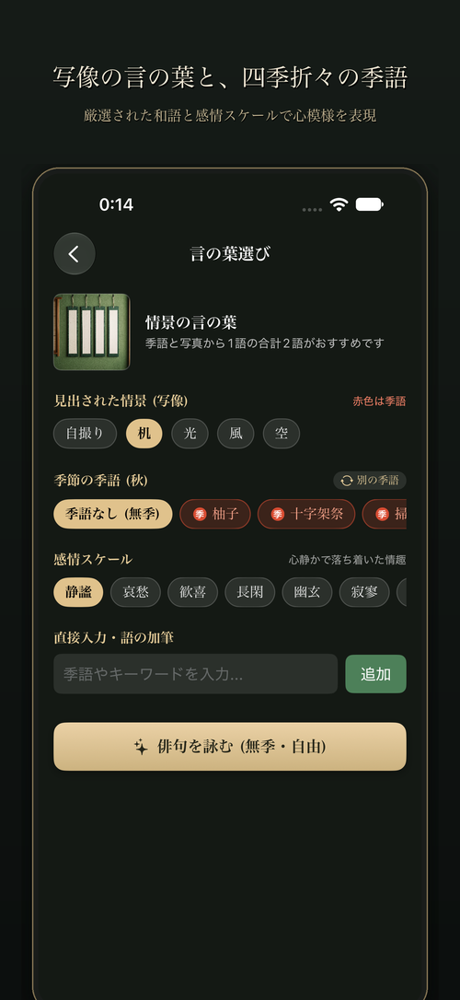
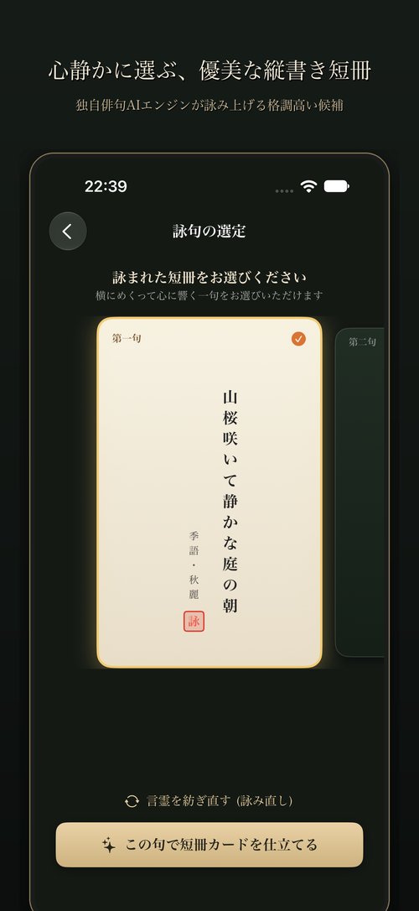

〜 自 撮 り で 始 め る A I 俳 句 〜
ふとした日常の自撮りや、目の前に広がる季節の情景。
Apple Visionとオンデバイス自然言語AIが写真から言の葉を見出し、
その日その瞬間に寄り添う本格的な五七五を詠み上げます。
インカメラ（自撮り）とアウトカメラ（風景）の両方に対応。Apple Vision Frameworkにより、写真に映る人物や日常の器物、空や草木をオンデバイスで瞬時に認識・抽出します。
抽出された情景ラベルは高精度な自然言語処理により和語に変換。五七五の定型に美しく収まるよう、7モーラ以上の語を自動除外した厳選の言葉候補を提示します。
今日の日時に適合した風流な季語を多彩に提案。もちろん季語を選ばない「無季・自由律」にも対応し、あなたが選んだ単語が確実に句の主軸として詠み込まれます。
生成された俳句候補は、和紙の風合いを感じる美しい縦書き短冊で一覧表示。機械的な文字落ちを防ぎ、流麗な書体でじっくりと吟味していただけます。
琥珀・浅葱・紅藤など情緒あるエモいフィルターを写真に施し、正方形の美しい俳句カードを作成。句の背景を解説する鑑賞文とともに、SNSへワンタップで共有できます。
風に揺れる草木、軽井沢の野鳥、閑静な住宅街など、画面を切り替えるたびに心落ち着く和風の環境音がランダムに流れ、静謐な作句の時間を演出します。
クラウドLLMの破綻しやすい五七五を排し、単語の意味分類・古典名句コーパス学習・接続詞NNによる隙間充填・本歌取りアルゴリズムなど、独自のハイブリッドパイプラインを構築しました。
❖ 独自の技術解説・パイプラインを詳しく見る


